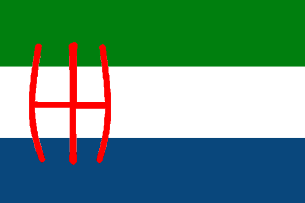
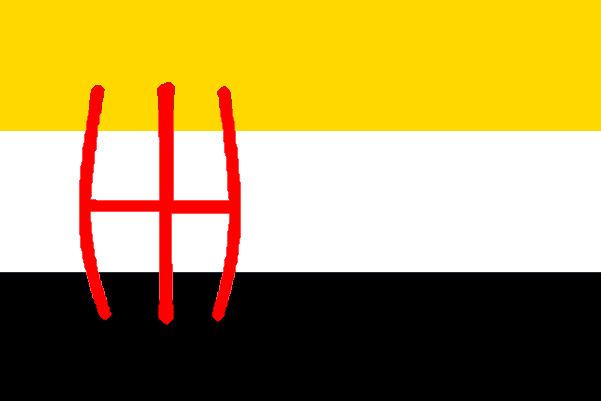
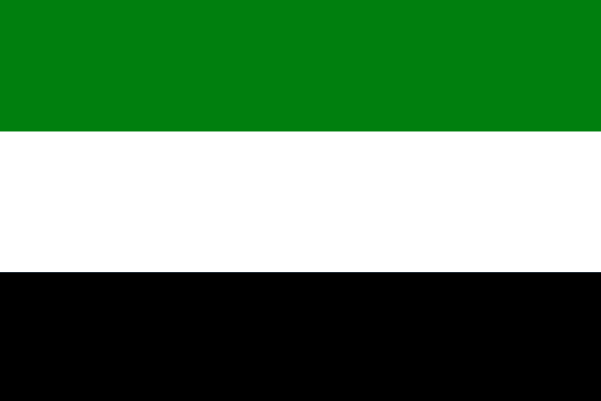
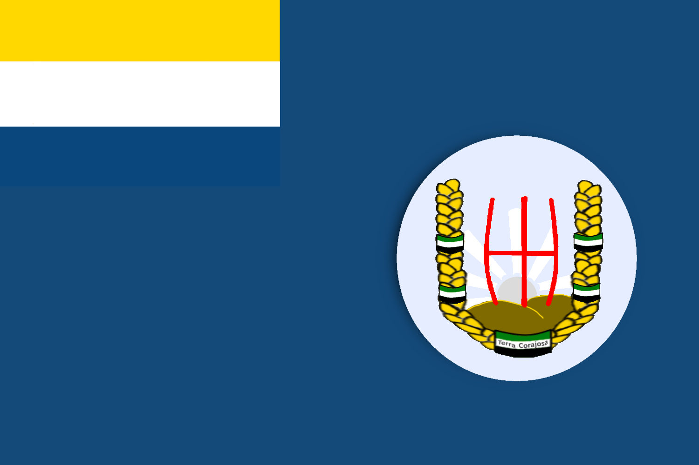
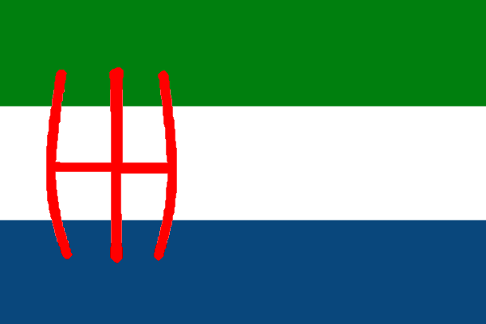
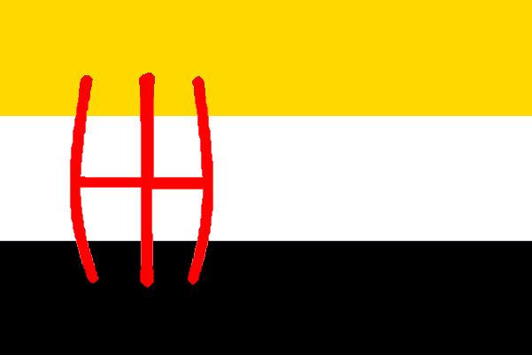
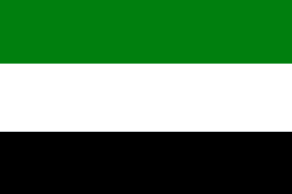
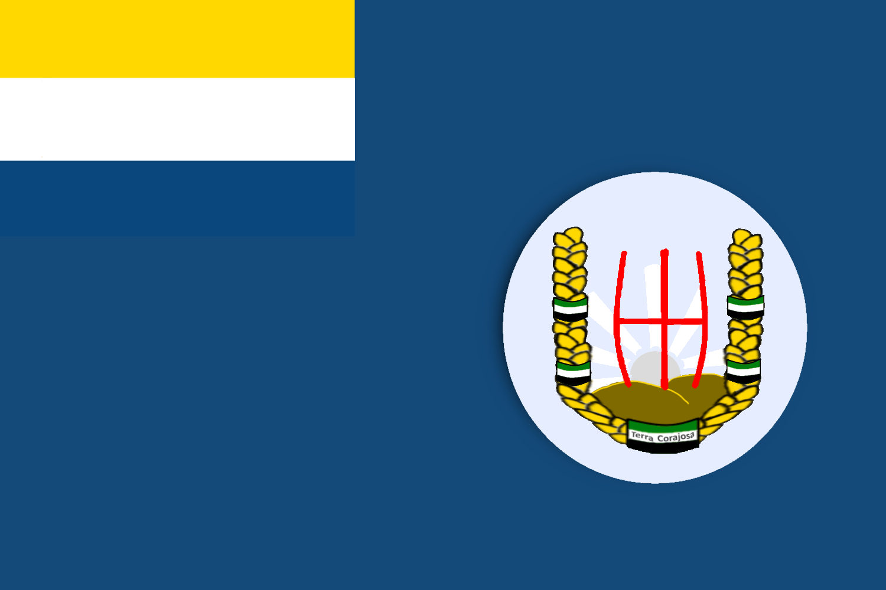

| Typ: | Dokument |
|---|
Unifikační Smlouva byl dokument na Třetí Sezóně FlaMaCraftu podepsán mezi Norte Tubaero a Terra Corajosa. Jednalo se o dokument jenž zajistil status loutkového státu pro Terra Corajosa.
Kvůli nízkému růstu oproti ostatním zemím se Graphite rozhodnul pokusit se o určitou integraci Terra Corajosa do Norte Tubaero, z důvodu obecné nefunkčnosti státu. Po domluvách došlo k sepsání tohoto dokumentu a jeho schválení.
Upozornění: Obsah je přepsán aby byl zbaven gramatických chyb a kontradikcí v systému.
"Já, jakožto první král Republiky Terra Corajosa nabízím připojení mého neutrálnímu státu ke státu Norte Tubaero pod určitými podmínkami"
Podmínky
Terra CorajosaNorte Tubaero
- Ponechá si doklady
- Všechny výdělky získané na území Terra Corajosa nepřipadnou Norte Tubaeru
- Školství bude stále v provozu
- Volby budou v provozu nezávisle na volbách Norte Tubaero
- Ponechání Písma
- Bude schvalovat či neschvalovat jakákoli rozhodnutí jenž bude vůdce Terra Corajosa chtít provézt
Smlouva byla sepsána dne 8. Července 2022 v 20:20 hodin.
Podpisy
Graphite
Netherit
Po podepsání smlouvy bylo několik návrhů na novou vlajku nově vzniklého loutkového státu. Návrhů bylo celkem 5 a vybrán byl ten první.
 






